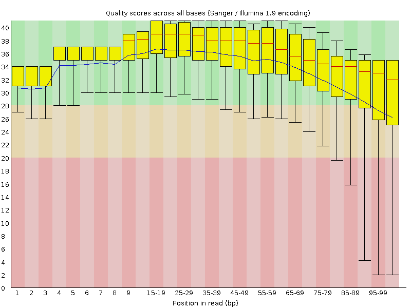
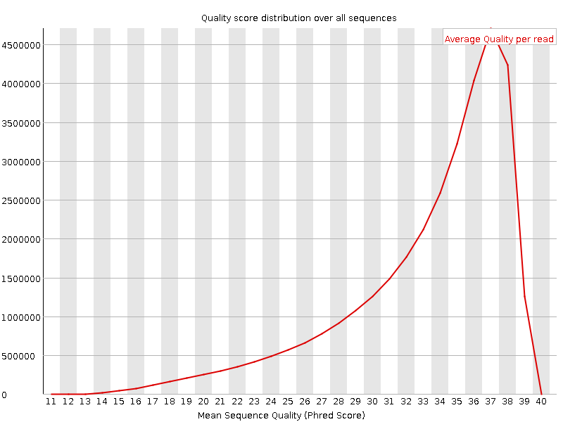
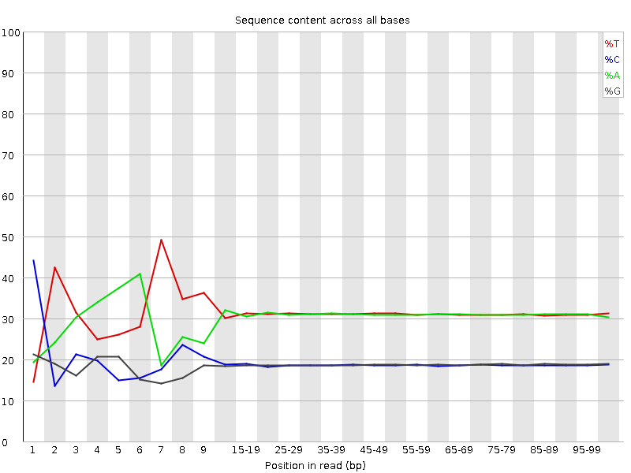
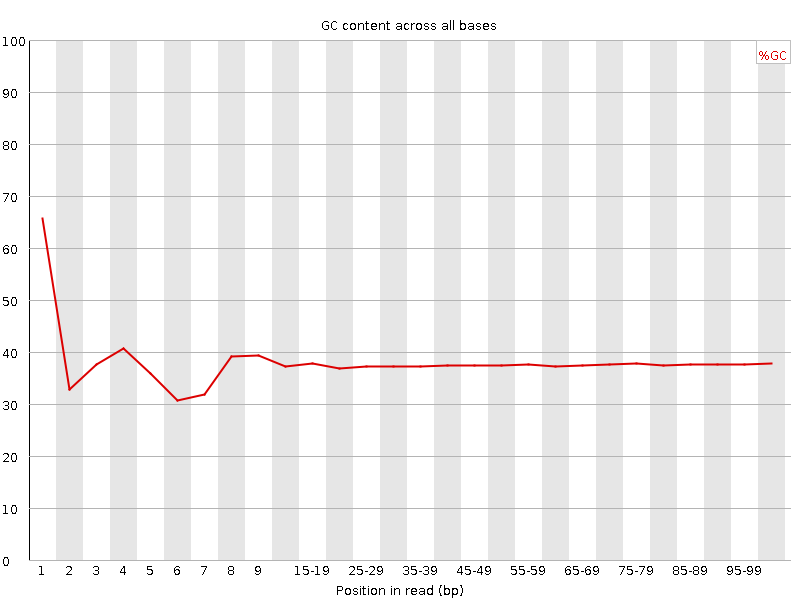
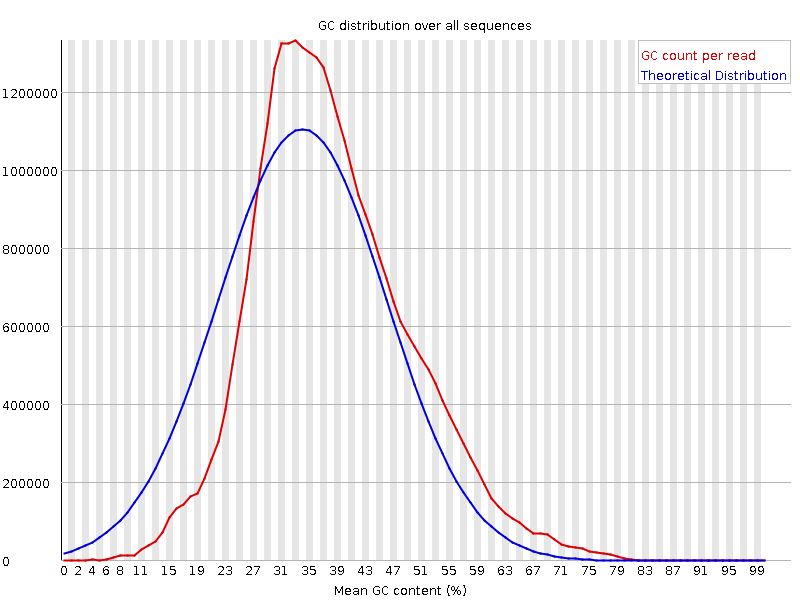
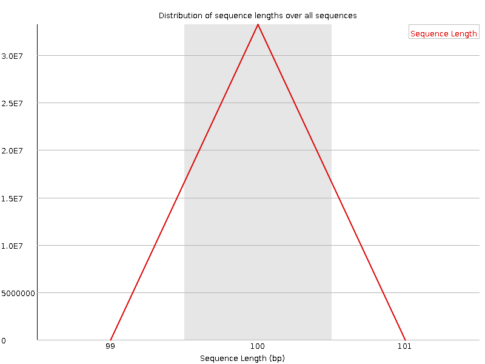
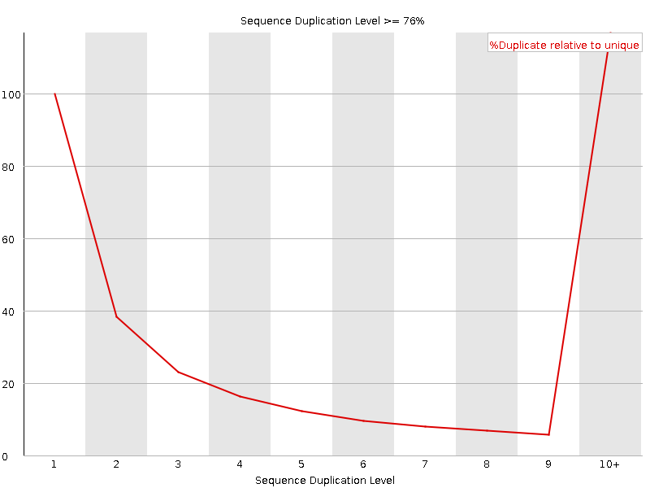
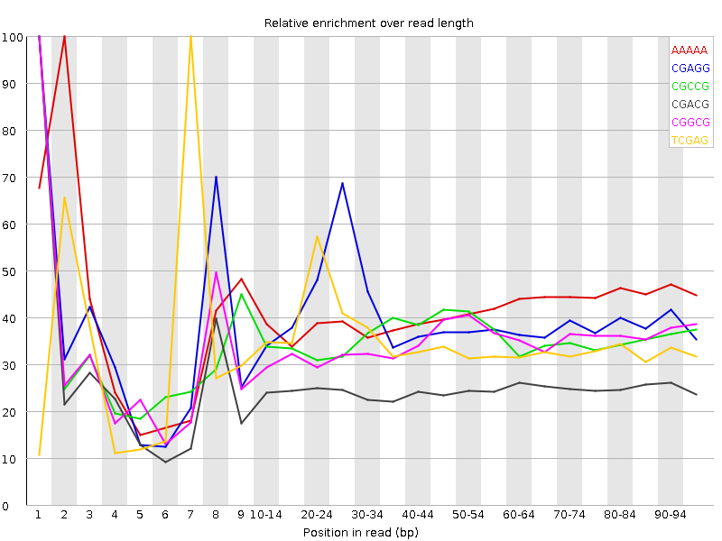

![[OK]](Icons/tick.png) Basic Statistics
Basic Statistics
| Measure | Value |
|---|---|
| Filename | t4_2.fq |
| File type | Conventional base calls |
| Encoding | Sanger / Illumina 1.9 |
| Total Sequences | 33208262 |
| Filtered Sequences | 0 |
| Sequence length | 100 |
| %GC | 37 |
Per base sequence quality

Per sequence quality scores

![[FAIL]](Icons/error.png) Per base sequence content
Per base sequence content

Per base GC content

![[WARN]](Icons/warning.png) Per sequence GC content
Per sequence GC content

Per base N content

Sequence Length Distribution

Sequence Duplication Levels

Overrepresented sequences
| Sequence | Count | Percentage | Possible Source |
|---|---|---|---|
| CTAATTTTCATCTTAATTCAACATCGAGGTCGCAAACATCTTTATCTATA | 80110 | 0.2412351480483983 | No Hit |
| CTTTCGTACAATTAATTAATATTTTATTATAGATAGAAACCAATCTGACT | 65164 | 0.19622827596337322 | No Hit |
Kmer Content

| Sequence | Count | Obs/Exp Overall | Obs/Exp Max | Max Obs/Exp Position |
|---|---|---|---|---|
| AAAAA | 20925885 | 2.302939 | 5.56384 | 2 |
| CGAGG | 2705680 | 2.1813228 | 5.45241 | 1 |
| CGCCG | 1628415 | 2.1087976 | 5.911722 | 1 |
| CGACG | 2546830 | 2.0253925 | 8.09142 | 1 |
| CGGCG | 1462335 | 1.9197776 | 5.536194 | 1 |
| TCGAG | 3733930 | 1.8079435 | 5.175736 | 7 |
| CGCGG | 1354280 | 1.7779211 | 5.8352757 | 1 |
| CTCGA | 3663505 | 1.749771 | 9.106205 | 1 |
| CGCGA | 2067975 | 1.6445782 | 6.065494 | 1 |
| CTGGA | 3366380 | 1.6299782 | 7.0998855 | 1 |
| ATCGA | 5383705 | 1.5790837 | 5.469286 | 6 |
| CGAGA | 3221010 | 1.5730437 | 5.340909 | 1 |
| CGATC | 3277825 | 1.5655618 | 5.0932946 | 4 |
| CTTCC | 3349090 | 1.5643969 | 5.2826986 | 1 |
| CTCCA | 3287230 | 1.5487463 | 7.3216763 | 1 |
| CGCCA | 1952205 | 1.5314417 | 5.715106 | 1 |
| CCGGC | 1181665 | 1.5302562 | 5.402306 | 1 |
| GTCGA | 3108990 | 1.5053518 | 5.1141143 | 1 |
| CAAAA | 8220910 | 1.4732586 | 5.016341 | 1 |
| CTTTC | 5148010 | 1.4640939 | 7.0733666 | 1 |
| CTTTT | 8445595 | 1.4624101 | 6.2030435 | 1 |
| CTCGT | 3058105 | 1.4481274 | 7.4889803 | 1 |
| TCATC | 4947415 | 1.4191816 | 5.0492697 | 8 |
| CTCGC | 1823765 | 1.4184493 | 6.769895 | 1 |
| CTTCG | 2976570 | 1.4095175 | 6.3340693 | 1 |
| CGAAG | 2870565 | 1.4018971 | 5.216686 | 1 |
| CTGGC | 1775875 | 1.4002049 | 5.113215 | 1 |
| CTTCA | 4834820 | 1.3868831 | 5.6086197 | 1 |
| CTCGG | 1756540 | 1.3849599 | 8.3087845 | 1 |
| CTCCT | 2897030 | 1.3532348 | 5.0721216 | 1 |
| CGAAA | 4237005 | 1.2534671 | 5.409898 | 1 |
| CTTGG | 2529815 | 1.2144436 | 5.8136845 | 1 |
| CTTTG | 4195595 | 1.2096434 | 5.9125514 | 1 |
| GAATC | 4053320 | 1.1888711 | 5.094042 | 4 |
| CTTGA | 3878840 | 1.1279651 | 5.088557 | 1 |